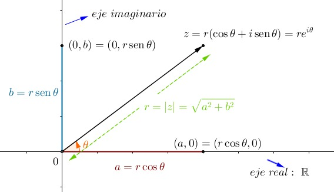
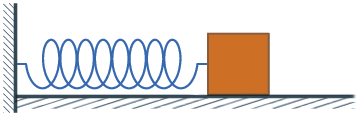
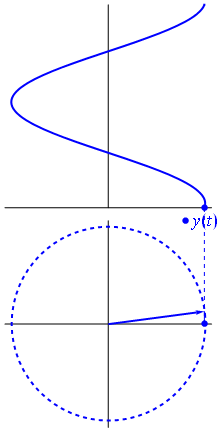
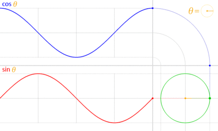
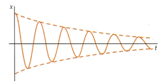

Matemática IV
Aplicaciones de los contenidos de la materia
Números Complejos
Representación de objetos en un plano bidimensional
- Números complejos como herramientas
- Casos específicos
Análisis de frecuencias
- Generación de terrenos
- Análisis de sonido
- ...
Conceptos Necesarios
Repaso
Un número complejo es un número de la forma $ a + bi $ donde:
-
$ a, b \in \mathbb{R} $
-
$ i $ es la solución a la ecuación $ x^2 = -1 $
En el número $a + bi$, $a$ es la parte real y $b$ es la parte imaginaria.
El sistema numérico complejo se puede definir como la extensión algebraica de los números reales ordinarios mediante un número imaginario $i$. Esto significa que los números complejos se pueden sumar, restar y multiplicar como polinomios en la variable $i$, con la regla $i^2 = -1$ impuesta.
Además, los números complejos también se pueden dividir por números complejos distintos de cero.
Geometricamente, los números complejos extienden el concepto de linea numérica unidimensional a plano complejo bidimensional.
En el plano complejo, el número $a + bi$ puede representarse como el punto $(a, b)$ de la siguiente forma:
Plano Complejo
Representación de objetos
Traslaciones y Rotaciones
Los números complejos forman un Cuerpo, por lo que dos números complejos $a$ y $b$ pueden sumarse y multiplicarse.
Sean $a = x_1 + y_{1}i, b = x_2 + y_{2}i \in \mathbb{C}$ tales que:
- |$a$| $= r_a, arg(a) = \theta_a$
- |$b$| $= r_b, arg(b) = \theta_b$
Definimos el producto complejo de la siguiente forma:
\[\begin{aligned} ab &= r_{a}r_{b} \textbf{e}^{i(\theta_a + \theta_b)} \\ &= {r_{a}r_{b}}_{(\theta_a + \theta_b)} \end{aligned}\]
Ejemplo Específico
Queremos representar la posición de un objeto cuyo movimiento se muestra de la siguiente forma:
Podemos ver como se comporta el movimiento en el eje x en la siguiente imagen:
Además, observamos en el siguiente gráfico como es el comportamiento del mismo en función de funciones trigonométricas conocidas.
La misma se comporta de la siguiente forma:
Amplitud
Para definir la amplitud inicial de la función seno simplemente multiplicamos la posición del objeto por un número que signifique la amplitud inicial del resorte, $A$.
Periodo
Sabemos que la función $sin$ recibe la variable $t$ como argumento en cada iteración. Luego, podemos evaluar como afectaría a la posición del objeto multiplicar ese tiempo $t$ por un valor real $\omega$.
Fase
Finalmente, determinamos cuan corrido está el dibujo de la función seno en base a la fase $\phi$.
Juntando todas las definiciones planteadas anteriormente, resumimos la posición del objeto en función del tiempo de la siguiente forma:
- $y(t) = Asin(\omega t + \phi)$
- $x(t) = Acos(\omega t + \phi)$
De esto sabemos a su vez que, si derivamos $x(t)$ ó $y(t)$ respecto de $t$, obtenemos la velocidad a la que se mueve el objeto, quedando la siguiente función de velocidad para cada uno respectivamente:
- $v_{y}(t) = A \omega cos(\omega t + \phi)$
- $v_{x}(t) = -A \omega sin(\omega t + \phi)$
Análisis de Frecuencias
Generación de Terrenos
Análisis de audios
Señales complejas y Fourier
ejemplo